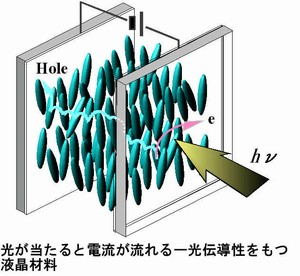
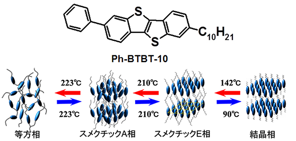

Research theme
The research theme of Iino Laboratory is the development of liquid crystalline organic materials that can be considered to be new, practical and pragmatic organic semiconductors. The term "Liquid crystal" refers to a material form specific to organic substances whose molecules show a regular orientation like crystals, at the same time showing fluidity like a liquid. "Liquid crystalline materials" are widely used in displays, but the so-called "nematic liquid crystal" used in displays is only one type of liquid crystalline material.Misconceptions about liquid crystal
- The liquid crystal material is a liquid substance.
- The orientation of the liquid crystal material is sensitive to the electric field.
- The liquid crystal material does not crystallize.
- Conduction in liquid crystal material is ionic conduction.
The point #4 is often misunderstood as well. As shown in the first figure, it has been clarified that the electric conduction in the liquid crystal, which was conventionally thought to be ionic conduction, is actually electronic conduction. With electronic conduction, carriers can move upto 103 times faster than ionic conduction. This shows that liquid crystal materials can be applied to electronic devices commercially.